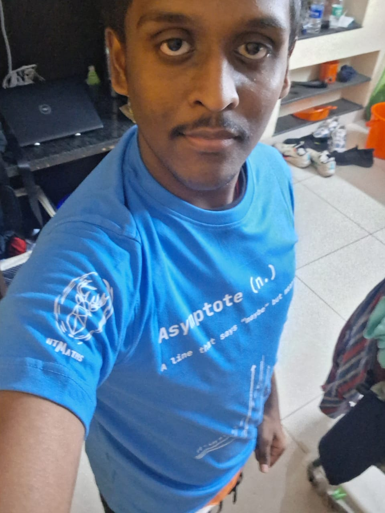

I made this website as a project for the W&B club of IIT Madras, of
which I am now a Deputy Coordinator. It also makes a lot of sense to
have self-intro website, doesn't it? Well, lets see if I can bring this
one to life with whatever I have learnt thus far.
I am Bala Nithin M S, an undergraduate student in Aerospace Engineering
at the Indian Institute of Technology, Madras, with a growing interest
in fluid mechanics and research at the intersection of Physics and
Aerospace. I enjoy combining my curiosity for science and technology
with hands-on work in coding, 3D design, and student clubs on campus.
Background and education

I was born and brought up in Coimbatore, Tamil Nadu, and I currently
live in Chennai with my parents. I completed my schooling at The
Camford International School (TCIS), where I developed a strong
inclination towards the sciences and participated actively in
academic pursuits.
Academic interests

Within aerospace, I have recently become particularly interested in
fluid mechanics and aerodynamics, and I am keen on exploring these
areas in greater depth through coursework and future research
projects. During school, I secured a good state-level rank in the
Biology Olympiad, which strengthened my interest in core science
subjects and analytical problem-solving.
Technical Skills

I have a reasonable command of C and Python and have recently
started learning C++, along with experience in HTML and CSS and an
ongoing effort to improve my JavaScript skills. I also work with CAD
and 3D design tools such as Fusion 360 and Tinkercad, and I built a
simple drone prototype in middle school, which first sparked my
interest in engineering and making.
Clubs and campus involvement

I am an active member of several student communities at IIT Madras,
including the WebOps and Blockchain Club at CFI, where students work
on web development and blockchain-based software with real-world
impact. I am also part of Horizon, the Physics and Astronomy
society, the Mathematics Club, and the 3D Printing Club, all of
which allow me to explore physics, mathematics, and prototyping in a
collaborative environment.
Interests and hobbies

Outside academics and technical work, I am an avid reader,
especially of historical fiction and fantasy, and I am currently
immersed in Sarah J. Maas' Throne of Glass series. I also enjoy
playing badminton and swimming, which help me maintain a balanced
routine and unwind after intense academic and club activities.